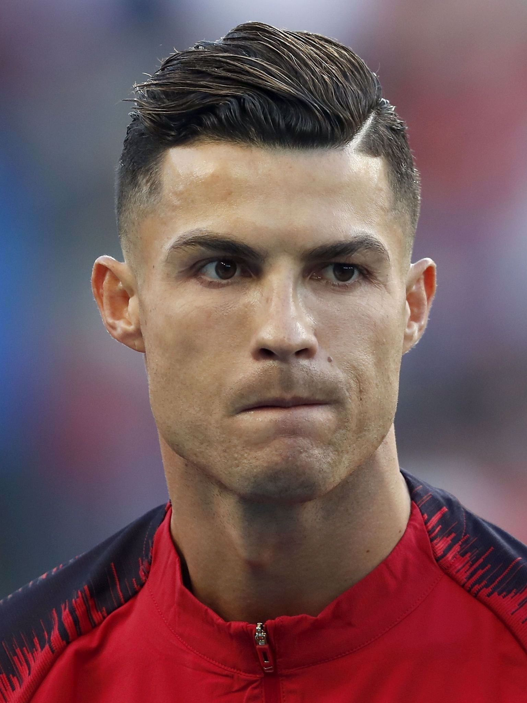

Cristiano Ronaldo dos Santos Aveiro was born on 5 February 1985 in the São Pedro parish of Funchal, the capital of the Portuguese island of Madeira, and grew up in the nearby parish of Santo António.[11][12] He is the fourth and youngest child of Maria Dolores dos Santos Viveiros da Aveiro, who worked as a cook in the hospitality industry and a cleaning woman,[13][14] and José Dinis Aveiro, a municipal gardener at the Junta de Freguesia of Santo António and part-time kit man for football club Andorinha.[15][16][17] His great-grandmother on his father's side, Isabel da Piedade, an African woman, was born in the island of São Vicente, in what was then Portuguese Cape Verde, and moved to Madeira Island at 16.[18][19] He has one older brother, Hugo, and two older sisters, Elma and Liliana Cátia "Katia"
ronaldo 